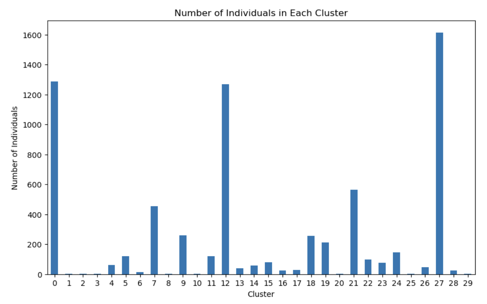
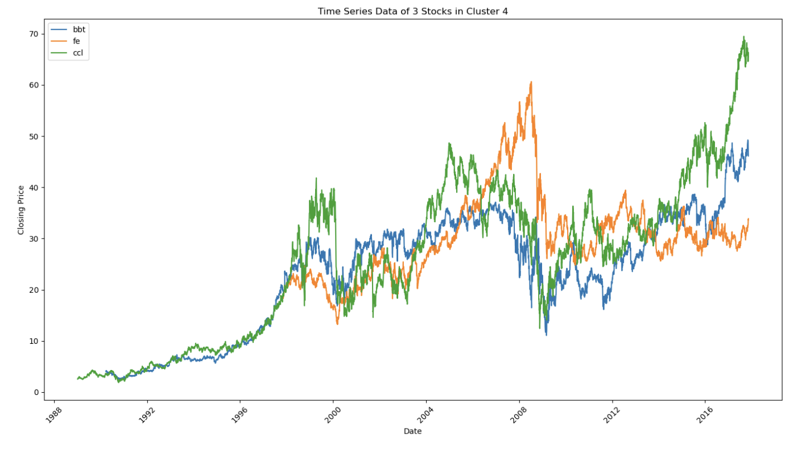

Midterm Report
Data
We decided to switch our dataset to the “Huge Stock Market Dataset” on Kaggle, which contains more recent information, aiding in our backtesting and model training. The dataset contains both ETF and single equity data, but we only used the single equity data. The dataset originally contained 7000 text files, which we converted to CSV files.

Feature Engineering
The original dataset contained only a limited set of features, primarily basic price and volume data. While informative, these features alone were insufficient for effectively training our clustering models, as they did not capture essential quantitative metrics related to price volatility, trend momentum, and trading behavior. Therefore, as outlined in our proposal, we performed extensive feature engineering to enhance the dataset's depth for clustering.
To build more robust features, we introduced several new quantitative features. Key additions included moving averages over multiple time windows (e.g., 5, 10, and 20 days) to smooth out price fluctuations and reveal long-term trends, as well as exponential moving averages (EMAs). By incorporating Bollinger Bands and volatility metrics, we enhanced our ability to assess price variability and detect breakout points, which are critical for understanding stock behavior across market conditions.
Furthermore, we added momentum indicators like the Relative Strength Index (RSI) and Rate of Change (ROC), which measure price momentum and help distinguish between bullish and bearish trends. To capture intraday price dynamics, we calculated percentage changes between daily high and low prices (High-Low %) and closing and opening prices (Close-Open %). We also transformed price data into log returns for a statistically sound measurement of continuous compounding returns, making the dataset suitable for models that assume normally distributed returns.
Additionally, volume-based features such as the Volume Moving Average allowed us to incorporate trading activity trends, highlighting periods of increased buying or selling pressure. Each of these engineered features provided insights into the underlying market structure and behavior, enhancing the dataset’s utility for clustering.
Feature Selection
In clustering, variances of features play a significant role in determining how well the data can be grouped into clusters. Variance measures how features differ from each other, with high variance features providing a more distinct separation across data points. To find the optimal features, we used a variance threshold to filter out features that do not vary much, as low variance features don’t effectively separate the data points for clustering.

The graph above shows the variance for each feature in our dataset. We aimed to condense the time series data into summary statistics without using the full time series to simplify the data. For each time series metric, like daily return, moving average, exponential moving average, volatility, etc., we calculated the 25th percentile, 50th percentile, and 75th percentile values over a two-year time span. These percentiles provided the distribution of each metric. Taking these percentile values, we created features that represent the range and central tendencies. While it condenses the data effectively, it sacrifices temporal details. By reducing each time series to a few key percentiles, we lose the ability to capture day-to-day patterns, which would offer more insights for clustering.
Clustering Techniques
K-Means
K-Means clustering is an unsupervised machine learning algorithm used to group similar points of data based on their features. It organizes points to minimize differences within clusters while maximizing the distance between each cluster. The number K is the number of clusters or centroids. Each point is assigned to the nearest cluster, and the centroids are recalculated. This algorithm stops when the clusters stabilize.

First, we loaded the dataset and removed any missing values. Only numeric features were used for clustering. Using the 20-day volume moving average (50th percentile) and 10-day moving average (50th percentile), we chose 30 clusters. The features were standardized to have a mean of 0 and a standard deviation of 1, which is important as it treats the features equally when calculating distances between points. We used a Silhouette score to determine the quality of clusters, where a higher score indicates a better-defined cluster.

DBSCAN
DBSCAN is an unsupervised machine learning algorithm particularly effective for identifying clusters in data with varying densities and for dealing with noisy data. Unlike K-Means, DBSCAN does not require the number of clusters to be specified in advance. Instead, it groups points based on density, identifying regions of high point concentration and classifying sparse points as noise.

For this analysis, we first transformed our high-dimensional feature space into a 2D space using t-SNE (t-distributed Stochastic Neighbor Embedding), with parameters set to TSNE(n_components=2, perplexity=30, n_iter=300). t-SNE is a powerful tool for visualizing high-dimensional data, preserving relative distances and ensuring that similar data points are closer in the new 2D representation.
We then applied DBSCAN to the t-SNE-transformed data with parameters eps=0.3 and min_samples=8. These values were chosen to balance the identification of meaningful clusters and minimize noise. DBSCAN effectively identified stocks with similar characteristics while isolating outliers, enabling a nuanced view of data that did not fit neatly into any specific cluster.
Quantitative Findings/Graphs
K-Means and DBSCAN clustering graphs represent all clusters formed. The graph shows the number of individuals in each cluster. Stocks within clusters exhibit similar patterns and are deemed as pairs.



Next Steps
The next step is to implement the distance approach by normalizing each stock’s price at the start of the formation period, allowing for comparisons. As outlined by Smith and Xu (2017), this involves calculating daily returns to construct normalized price paths. We then compute the Euclidean distance between each stock pair to rank them, with the smallest distances indicating the closest relationships (Elliott et al., 2005). This approach could provide a more accurate measure on how we implement our unique strategy for feature engineering. The best-performing pairs within the clusters will be selected for backtesting to assess profitability and analyzed for mean reversion using linear regression. Additionally, we will incorporate co-movement metrics to further refine pair selection within clusters.